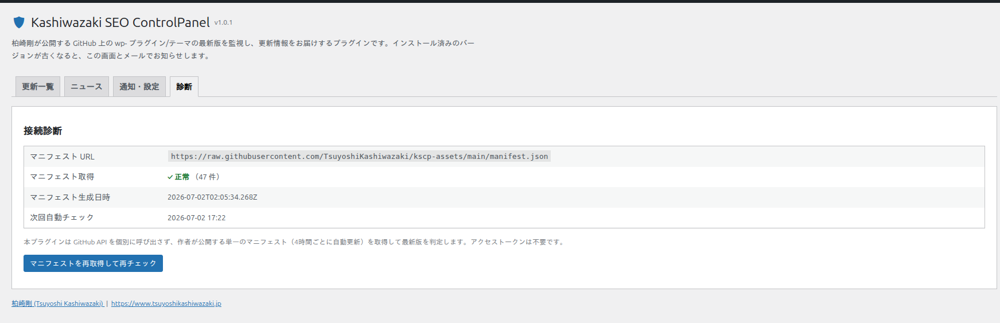
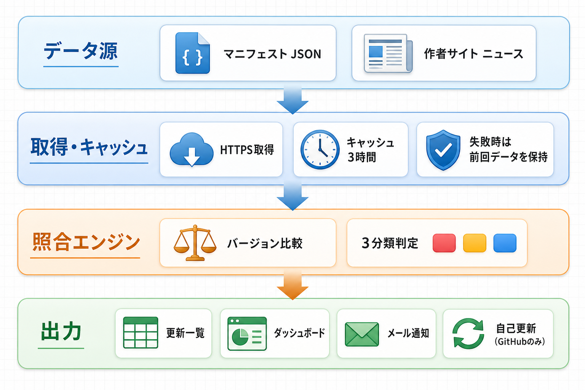

トラブルシューティング
よくある問題とその解決方法をまとめています。
診断タブの使い方
「診断」タブでは、マニフェストへの接続状態と自動チェックの予定を確認できます。問題が起きたときは、まずこの画面を確認してください。

| 項目 | 意味 |
|---|---|
| マニフェスト URL | 現在使用している監視データ源の URL |
| マニフェスト取得 | 「正常（N 件）」なら接続 OK。失敗時はエラーコードが表示されます |
| マニフェスト生成日時 | マニフェスト自体が最後に生成された日時（約 4 時間ごとに自動更新） |
| 次回自動チェック | wp-cron による次回の自動チェック予定時刻 |
よくある問題と解決策
更新があるはずなのに一覧に表示されない
原因: マニフェスト側の反映待ち、またはキャッシュが残っています。
「診断」タブの「マニフェスト生成日時」を確認します。マニフェストは約 4 時間ごとに自動生成されるため、公開直後の更新はまだ含まれていないことがあります。
「マニフェストを再取得して再チェック」ボタン（診断タブ）または「今すぐチェック」（更新一覧タブ）を押して、最新のマニフェストで照合し直します。
インストール名と公開名の表記揺れは自動で吸収されますが、「除外する slug」に登録した項目は一覧の対象外になります。設定も確認してください。
メールが届かない
原因: 通知設定・送信環境・通知済み記録のいずれかによるものです。
「通知・設定」タブで「メール通知」が ON になっているか、通知先メールアドレスが正しいかを確認します。
迷惑メールフォルダを確認します。サーバーからのメールが届きにくい場合は、SMTP 送信プラグインの利用を検討してください。
同じバージョンの更新は一度しか通知されません。「届かない」のではなく「通知済み」の可能性もあります。新しいバージョンが出たときに改めて通知されます。
自動チェックが実行されない
原因: WordPress の予約実行（wp-cron）はサイトへのアクセスを契機に動くため、アクセスが少ないサイトでは予定時刻どおりに実行されないことがあります。
「診断」タブの「次回自動チェック」に予定が表示されているか確認します。「未スケジュール」の場合は、プラグインを一度無効化して再度有効化すると再登録されます。
DISABLE_WP_CRON を有効にしている環境では、サーバーの cron から wp-cron.php を定期実行する設定になっているか確認してください。
マニフェスト取得が「取得できませんでした」になる
原因: 配信元（既定: raw.githubusercontent.com）への接続に失敗しています。
サーバーから外部への HTTPS 通信が許可されているか（ファイアウォールやセキュリティプラグインの制限がないか）を確認します。
マニフェスト URL を独自に変更している場合は、URL が正しいか・HTTPS で到達できるかを確認します。空欄に戻すと既定の URL に戻ります。
取得に失敗しても、前回正常に取得できたデータが保持されるため、一覧が突然空になることはありません。
本体の自己更新が失敗する
原因: 更新パッケージの取得元制限、またはファイル書き込み権限の問題です。
本体の更新パッケージは GitHub 系の配信ホストからのみダウンロードされます。セキュリティ製品などで github.com への接続を制限していないか確認してください。
/wp-content/plugins/ に書き込み権限があるか確認します。失敗が続く場合は、GitHub から最新版の ZIP を取得して手動で上書きしてください。
動作要件
| 項目 | 要件 |
|---|---|
| WordPress | 5.8 以上 |
| PHP | 7.2 以上 |
| PHP 拡張 | 特別な拡張は不要 |
| 外部通信 | マニフェスト配信元（既定 raw.githubusercontent.com）への HTTPS 接続 |
技術仕様
- データ保存: wp_options と transient のみ使用。カスタムテーブルは作成しません
- 自動チェック: wp-cron のフック
kscp_scheduled_check（毎時 / 6 時間ごと / 日次 / 週次） - 外部通信: マニフェスト JSON の取得（タイムアウト 15 秒・安全でない URL は拒否）と、作者サイトからのニュース取得（無効化可）。アクセストークン・個人情報は送信しません
- キャッシュ: マニフェストは設定値（既定 3 時間）、ニュースは 6 時間。取得失敗時は前回の良好データを保持
- 自己更新の安全策: 更新パッケージは HTTPS かつ GitHub 系ホストのみ許可
- アンインストール: プラグインを削除すると、設定・チェック結果・通知履歴・キャッシュ・予約実行がすべて削除されます
